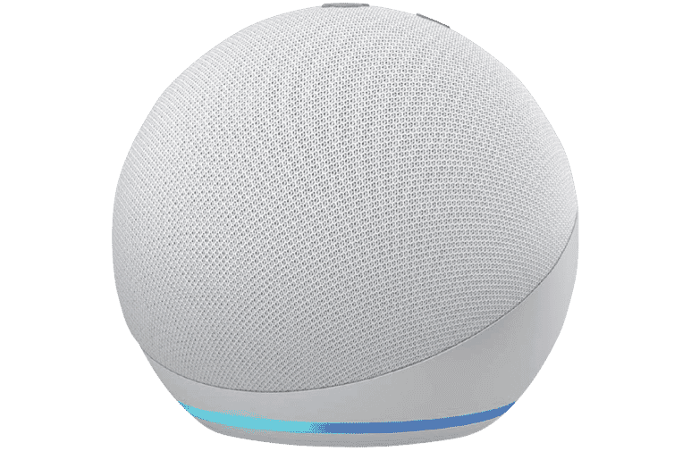

Internet of Things (IoT)

El internet de las cosas, o IoT por sus siglas en inglés, refiere a una red de dispositivos conectados (“cosas”) y al medio a través del cual se conectan (“internet”). Según Mukhopadhyay y Suryadevara (2014), “el término Internet de las Cosas (IoT) se utiliza para describir dispositivos embebidos (cosas) con conectividad a Internet, lo que les permite interactuar entre sí, con servicios y con personas a escala global. ” Estos dispositivos, o “cosas” , por lo general refieren no a computadoras, ni a teléfonos inteligentes, sino a objetos de la vida cotidiana, como podrían serlo plantas, refrigeradores, puertas o automóviles. De esta forma, el internet de las cosas nos distancia del concepto tradicional de lo que sería un “host” de internet, siendo este una computadora diseñada para enviar y recibir datos, a ser ahora uno más general, en el cual cualquier objeto de la vida cotidiana o herramienta, puede también estar conectado a internet.
Estos objetos pueden usar su conexión a internet para enviar datos que recolectan sus sensores. Esto permite una comunicación entre las cosas, las personas y los procesos. IoT toma diversos objetos de la vida cotidiana, a los cuales se les agrega la capacidad de conectarse a internet, con el propósito de poder intercambiar información y así poder proveer a los usuarios de los mismos con diversos servicios que de otro modo sería imposible. También es una práctica común el interconectar estos dispositivos mediante internet para que puedan interactuar y realizar acciones con base en la información que otros dispositivos provean.
Ejemplos de la vida cotidiana de IoT incluyen dispositivos como Alexa, el cual sirve como central de control de diferentes dispositivos inteligentes en un hogar:
Este dispositivo recibe comandos de voz o a través de una aplicación los cuales sirven para enviar instrucciones a otros dispositivos conectados. Esto le permite realizar tareas como colocar un video en la televisión, agregar notas o eventos a un calendario en tu teléfono, orquestar grupos de bocinas para reproducir una misma canción al mismo tiempo, encender luces en la casa, etc. Este es un ejemplo de cómo el tener varios dispositivos cotidianos de la casa puede servir para enviar instrucciones de unos a otros, cosa que es un tema recurrente en IoT puesto que los dispositivos inteligentes o “cosas” inteligentes suelen estar compuestas de, entre otras cosas, sensores y actuadores: los sensores recopilan información, como podrían serlo los comandos; mientras que los actuadores ejecutan acciones con base en instrucciones, instrucciones que otros dispositivos pueden enviar, como sería el caso del Alexa.